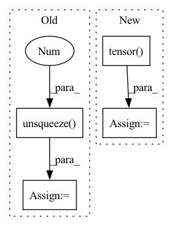

Pattern ID :23312
Before Change
source_text = batch_data["source_text"]
generate_corpus = []
for src in source_text:
input_ids = self.tokenize_text(src, self.task_text, self.source_max_length).unsqueeze(0 )
sample_outputs = self.model.generate(
input_ids,
num_beams=4,
max_length=input_ids.size(1) + self.target_max_length,
early_stopping=True,
)
generated_text = self.tokenizer.decode(sample_outputs[0][input_ids.size(1) + 1:], skip_special_tokens=True)
generated_text = generated_text.split()
generate_corpus.append(generated_text)
return generate_corpus
After Change
task_prefix_len = len(task_prefix_tokens)
for src in source_text:
input_tokens = self.tokenizer.tokenize(src)[:self.source_max_length - task_prefix_len] + task_prefix_tokens
input_ids = torch.tensor( self.tokenizer.convert_tokens_to_ids(input_tokens), dtype=torch.long) .unsqueeze(0)
sample_outputs = self.model.generate(
input_ids,
num_beams=4,
max_length=len(input_tokens) + self.target_max_length,
early_stopping=True,
)
generated_text = self.tokenizer.decode(sample_outputs[0][len(input_tokens) + 1:], skip_special_tokens=True,
clean_up_tokenization_spaces=False)
generated_text = generated_text.lower().split()
generate_corpus.append(generated_text)
return generate_corpusIn pattern: SUPERPATTERN
Frequency: 3
Non-data size: 4
Instances Fragment ID: 73471520
Project Name: rucaibox/textbox
Commit Name: 81da6bb852a3637c8053ccf5f9b236dc4283fd86
Time: 2022-01-20
Author: wxDai2001@gmail.com
File Name: textbox/model/Seq2Seq/gpt2seq.py
M Class Name: GPT2Seq
N Class Name: GPT2Seq
M Method Name: generate(3)
N Method Name: generate(3)
M Parent Class: Seq2SeqGenerator
N Parent Class: Seq2SeqGenerator
M File Name: textbox/model/Seq2Seq/gpt2seq.py
N File Name: textbox/model/Seq2Seq/gpt2seq.py
M Start Line: 51
M End Line: 61
N Start Line: 37
N End Line: 50
Before Change
mel_embs = []
for mel in mels:
mel = mel.unsqueeze(0 )
mel_emb, _ = self.mel_rnn(mel)
mel_emb = mel_emb.squeeze(0)
mel_embs.append(mel_emb)
After Change
pad_mels = pad_sequence(mels, batch_first=True)
pack_mels = pack_padded_sequence(
pad_mels, torch.tensor( mel_lens) , batch_first=True, enforce_sorted=False
)
pack_mel_embs, _ = self.mel_rnn(pack_mels)
mel_embs, _ = pad_packed_sequence(pack_mel_embs, batch_first=True)
// mel_embs: (batch, emb_dim, max_mel_len) Fragment ID: 73471511
Project Name: yistlin/universal-vocoder
Commit Name: decd133f652564aab54717a4e8df0316421e35c0
Time: 2020-10-07
Author: yishen992@gmail.com
File Name: models/universal_vocoder.py
M Class Name: UniversalVocoder
N Class Name: UniversalVocoder
M Method Name: generate(2)
N Method Name: generate(2)
M Parent Class: nn.Module
N Parent Class: nn.Module
M File Name: models/universal_vocoder.py
N File Name: models/universal_vocoder.py
M Start Line: 78
M End Line: 108
N Start Line: 77
N End Line: 106
Before Change
network_prediction = self.q_network.forward(batch_inputs).view(self.batch_size, self.agents, self.number_actions)
// Bellman equation
batch_labels_tensor = batch_labels + (discount_factor * max_target_net)
td_errors = (network_prediction - batch_labels_tensor.unsqueeze(-1 ) ).detach()
index = torch.tensor(transitions[1], dtype=torch.long).unsqueeze(-1)
y_pred = (torch.gather(network_prediction, -1, index)).squeeze()After Change
Transitions are tuple of shape obses_t, actions, rewards, obses_tp1, dones
"""
curr_state = torch.tensor(transitions[0])
next_state = torch.tensor( transitions[3])
// Labels are the rewards
rewards = torch.clamp(torch.tensor(transitions[2], dtype=torch.float32), -1, 1)
y = self.target_network.forward(next_state).detach().squeeze() // TODO: should it be next state or current state that we forward?
y = y.view(self.batch_size, self.agents, self.number_actions)
// Get the maximum prediction for the next state from the target network
max_target_net = y.max(-1)[0]
network_prediction = self.q_network.forward(curr_state).view(self.batch_size, self.agents, self.number_actions)
// Bellman equation
batch_labels_tensor = rewards + (discount_factor * max_target_net.detach())
//td_errors = (network_prediction - batch_labels_tensor.unsqueeze(-1)).detach() // TODO td error needed for exp replay
Fragment ID: 73471514
Project Name: gml16/rl-medical
Commit Name: 8a44d0b4c41689fa1ec3c16b470f02e656be2e3c
Time: 2020-03-05
Author: g.m.leroy@outlook.com
File Name: examples/LandmarkDetection/DQN/DQNModelTorch.py
M Class Name: DQN
N Class Name: DQN
M Method Name: _calculate_loss(3)
N Method Name: _calculate_loss(3)
M Parent Class:
N Parent Class:
M File Name: examples/LandmarkDetection/DQN/DQNModelTorch.py
N File Name: examples/LandmarkDetection/DQN/DQNModelTorch.py
M Start Line: 208
M End Line: 220
N Start Line: 211
N End Line: 221